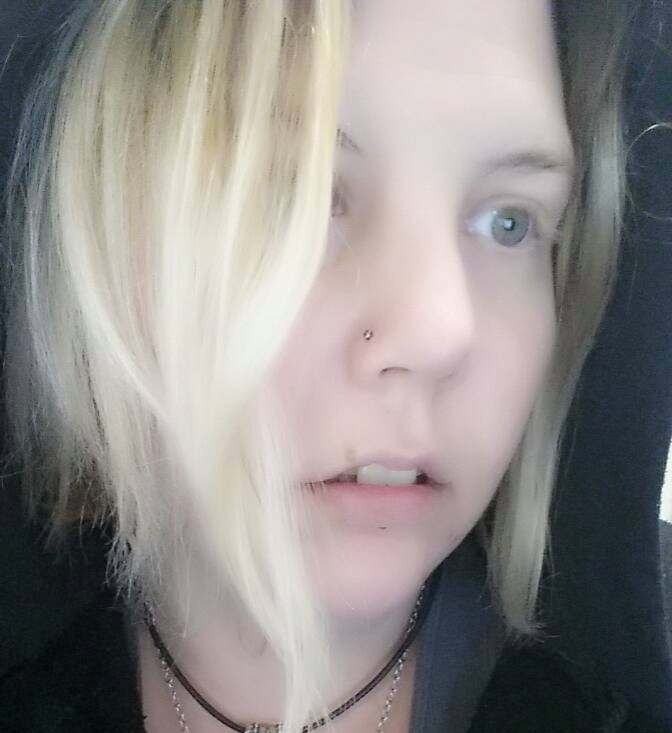

Team Credits
Site Author: Jordan Mynes

Current student of Illinois Institute of Technology, majoring in studying Information Technology and Management (ITM). Interests include: Bitcoin, Free Open Source Software (FOSS), college/pirate radio, and computers. LinkedIn: here
Jordan designed this website for free, for use with the Vocalist Producer Challenge IV, which he has awaited with excitement for some time. If you would like to support Jordan's efforts, you can donate: here
You can also donate with Bitcoin to: 16FCxtMFUk8nBgtSohSPS8uyc759gy8Q4A
Logo Designer: Twill Distilled
Nerdcore.co Hosting: Niik (LampedGod)
Connoisseur of Dat Boi memes
VPC Admin: Whitney Harper
